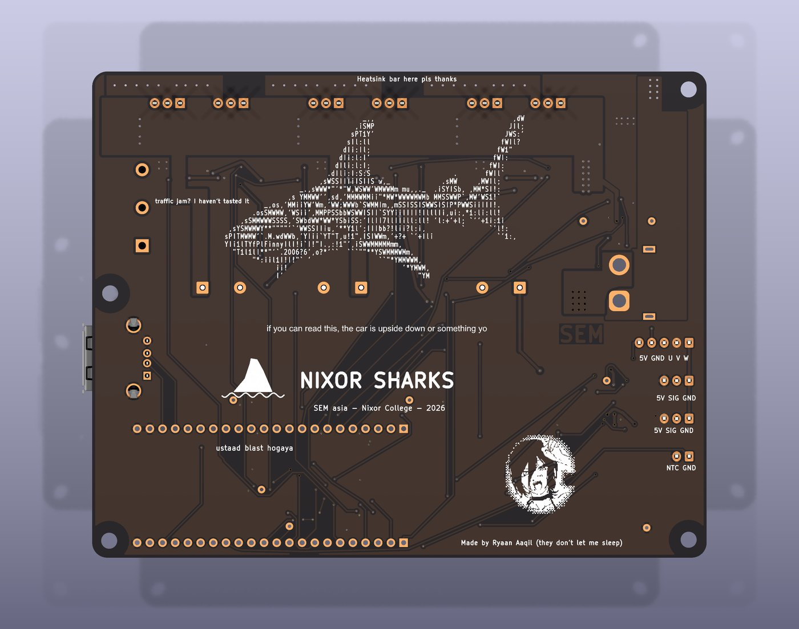

Mako
The motor controller I designed for our Shell Eco-marathon car.

what it is
A 3-phase BLDC controller for a battery-electric prototype car. An ESP32-S3 DevKit plugs into sockets on the board and runs everything.
Last year's car ran, but that's about all it did: no testing, no data, no spares, and the throttle got damaged at the competition. This board and the plan around it are built around not repeating that, which is why it logs everything to an SD card.
what's on it
- Power stage: 3 half-bridges, 6 IPP023N10N5 FETs driven by IR2184S gate drivers
- Current sense: 1 mΩ shunts on phases A and B with INA240A2 amps. Phase C is worked out in firmware
- Telemetry: an INA228 on a 0.5 mΩ bus shunt for voltage, current, power and a running energy total, logged to a microSD card
- Rails: two LM5164 bucks, 48 V to 12 V for gate drive and 12 V to 5 V for logic
- Inputs and outputs: motor halls, throttle, wheel speed, motor and board temperature, a status LED and a USB port for the steering wheel
safety
Nothing safety-critical depends on firmware. Every gate stays off until the firmware sets a drive enable, and letting go of the throttle pulls a KILL line through a comparator in hardware. The e-stops, the dead-man and the throttle kill all work with the ESP32 unplugged. There's also reverse-polarity protection and a TVS diode on the input.

where it's at
The board is designed and ordered from JLCPCB, and the wiring plan for the whole car is written. The competition is around January 2027, so the next few months are building all of it.